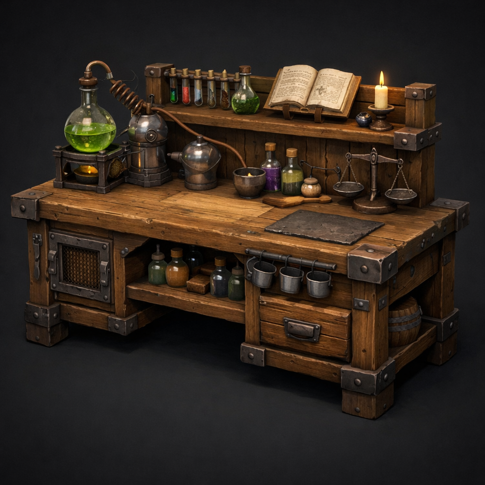

concept-01
Grounded Hero Three-Quarter
Create a single isolated fantasy RPG prop concept for an alchemy table used in the alchemy room. Show a strong three-quarter view on a clean dark neutral background. The prop should feel grounded, warm, alchemical, practical. Materials should read as wood, iron, worn finish. Keep the silhouette readable from first-person gameplay distance. Style constraints: readable silhouette, game-friendly detail, no ornate overload. Approximate real-world size: Needs confirmation during concept review. Intended use: Primary alchemy crafting table for the castle slice. No extra scene clutter, no character, no text, no watermark.